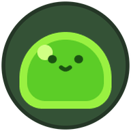

Slimer, in your browser
The real game, compiled to WebAssembly. Nothing has downloaded yet — the engine is only fetched once you press the button below.
About 50 MB to download, 42 MB of it a single WebAssembly file.
It arrives compressed, so expect roughly 12 MB over the wire.
It arrives compressed, so expect roughly 12 MB over the wire.
WASD move · Mouse aim · Left click shoot
Space ability one · Shift ability two · R reload
F continue at the shop · Esc pause
Needs a keyboard and mouse. The desktop builds run smoother and keep
your save between sessions.